- 00 开篇词 帮你从0到1深入学习区块链技术.md.html
- 尾声篇 授人以鱼，不如授人以渔.md.html
- 新书首发《区块链第一课：深入浅出技术与应用》.md.html
- 第01讲 到底什么才是区块链？.md.html
- 第02讲 区块链到底是怎么运行的？.md.html
- 第03讲 浅说区块链共识机制.md.html
- 第04讲 区块链的应用类型.md.html
- 第05讲 如何理解数字货币？它与区块链又是什么样的关系？.md.html
- 第06讲 理解区块链之前，先上手体验一把数字货币.md.html
- 第07讲 区块链的常见误区.md.html
- 第08讲 最主流区块链项目有哪些？.md.html
- 第09讲 深入区块链技术（一）：技术基础.md.html
- 第10讲 深入区块链技术（二）：P2P网络.md.html
- 第11讲 深入区块链技术（三）：共识算法与分布式一致性算法.md.html
- 第12讲 深入区块链技术（四）：PoW共识.md.html
- 第13讲 深入区块链技术（五）：PoS共识机制.md.html
- 第14讲 深入区块链技术（六）：DPoS共识机制.md.html
- 第15讲 深入区块链技术（七）：哈希与加密算法.md.html
- 第16讲 深入区块链技术（八）： UTXO与普通账户模型.md.html
- 第17讲 去中心化与区块链交易性能.md.html
- 第18讲 智能合约与以太坊.md.html
- 第19讲 上手搭建一条自己的智能合约.md.html
- 第20讲 区块链项目详解：比特股BTS.md.html
- 第21讲 引人瞩目的区块链项目：EOS、IOTA、Cardano.md.html
- 第22讲 国内区块链项目技术一览.md.html
- 第23讲 联盟链和它的困境.md.html
- 第24讲 比特币专题（一）历史与货币.md.html
- 第25讲 比特币专题（二）：扩容之争、IFO与链上治理.md.html
- 第26讲 数字货币和数字资产.md.html
- 第27讲 弄懂数字货币交易平台（一）.md.html
- 第28讲 弄懂数字货币交易平台（二）.md.html
- 第29讲 互联网身份与区块链数字身份.md.html
- 第30讲 区块链即服务BaaS.md.html
- 第31讲 数字货币钱包服务.md.html
- 第32讲 区块链与供应链（一）.md.html
- 第33讲 区块链与供应链（二）.md.html
- 第34讲 从业区块链需要了解什么？.md.html
- 第35讲 搭建你的迷你区块链（设计篇 ）.md.html
- 第36讲 搭建你的迷你区块链（实践篇）.md.html
- 捐赠
第06讲 理解区块链之前，先上手体验一把数字货币
初次接触到区块链的你，肯定是一头雾水：“区块链是什么，这玩意到底怎么回事”。
其实对于区块链的原理，你大可不必着急，咱们可以直接上手体验一下目前区块链的第一大应用：数字货币。
本篇的内容面向所有区块链的小白，我会教你如何使用数字货币，来帮你从另外一个维度理解区块链技术。
本篇内容包括但不限于：数字货币钱包介绍、下载安装、转账、数字货币交易所充币、提币等等。
首次接触数字货币
区块链其实是从生产者的角度讨论一个抽象出来的概念。如果把区块链比作车辆设计图纸，那么数字货币就是正在跑的汽车。所以理解区块链的最直观的方式其实是从数字货币入手，而不是直接一上来就来理解原理。
数字货币作为区块链的第一大应用，拥有巨大的市场，你可以从“ coinmarketcap.com ”上了解几乎所有数字货币的概况。
如果想了解数字货币行情，可以打开 feixiaohao.com 进行查看，也可以手机下载“ MyToken ”或“ 币看”。
这两个 App 的使用方法与股票行情软件非常相似，上面几乎可以查询到所有已经“上市”的数字货币的实时价格与成交量信息。
什么是数字货币钱包
数字货币钱包是最贴近用户的区块链程序，数字货币钱包会可以帮你管理数字货币私钥，发送交易，可以显示你的交易历史记录。从用户功能的角度，数字货币钱包比较接近我们日常使用的钱包，它帮助你管理纸币、硬币、信用卡借记卡。
数字货币钱包作为数字货币的载体，从技术角度来看，数字货币钱包分为三种类型。
- 全节点钱包。全节点钱包是指官方发行的一种数字货币钱包版本，这个版本包含了完整的功能需求，挖矿、发送交易、查询交易记录、管理私钥。
- SPV轻钱包（Simplified Payment Verification）。轻钱包为了用户体验，牺牲了全节点的部分功能，属于全节点钱包的简化版，如挖矿功能、查询交易功能就没有。
- 中心化资产托管钱包。这种钱包其实是第三方服务商帮助你打理你的数字货币，找一个中介托管你的数字货币，比较典型的有blockchain.info。
以上的第1种和第2种会在各个数字货币的官网出现，属于真正意义上的数字货币钱包，1相比2而言，安全性要更高；所以我在这里推荐你先从全节点钱包开始尝试，毕竟全节点钱包基本囊括了该币种的所有功能实现。
而第3种钱包，与银行移动App或支付宝相比，在业务逻辑上区别不大。比如你会把钱托管到支付宝上一样，你也可以将你的数字货币放进第三类钱包中。
这种钱包往往都是多币种的，深受投资用户的喜欢，而且从方便性和用户体验来说，基本完爆1和2，例如以太坊系钱包imToken，多币种钱包Jaxx，以及各个数字货币交易平台。
无论是什么类型的钱包，建议你在获取钱包程序的时候，一律要从官网下载，即使是移动端App也强烈推荐从官网的入口进入。
玩转数字货币钱包
上一节中，我们简单介绍了数字货币钱包的类型，本节内容将以全节点钱包作为例子，教你玩转数字钱包。我们这里会以某个币种的全节点钱包作为例子，穿插一些比特币 Electrum 轻钱包的例子，为你介绍数字货币钱包的上手方法。
由于我的电脑中安装了不同的数字货币钱包，它们的使用方法都是相似的。我截取的图片可能涉及了某些具体的币种，但这并不是我推荐安装建议，你可以忽略。另外在具体的操作过程中有大量图片展示，收听音频的你可以点击文稿查看。
1.获取钱包程序
全节点钱包程序是一种需要用户安装到桌面的软件，它需要互联网连接，不挖矿的话，资源消耗与其他中心化软件差不多。
与其他所有桌面客户端一样，首先用户需要获取安装包，安装包可以从官网下载，我们先到对应币种官网下载一个Windows版本的客户端钱包。
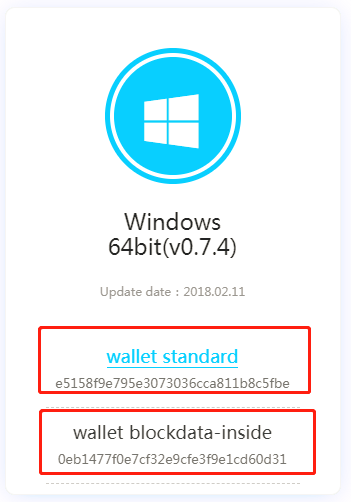
一直双击安装下一步等待安装完成，安装好以后桌面出现快捷方式，咱们双击打开，通常会出现钱包的主页面。
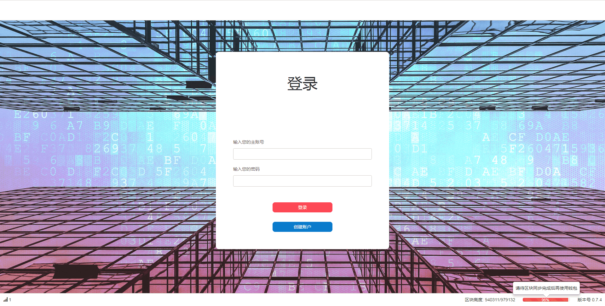
（ 某币种钱包主界面）
那我们来看看比特币，比如比特币的Electrum钱包长这样。
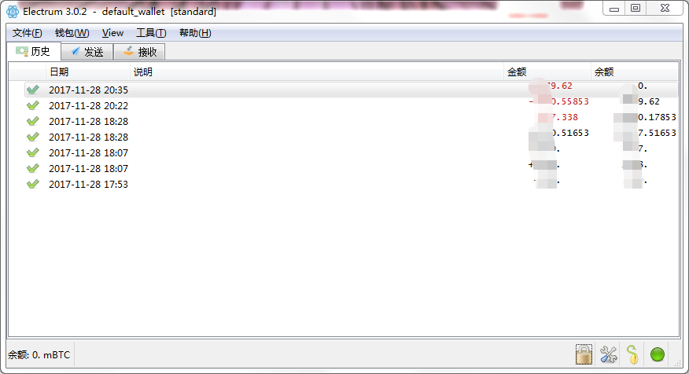
（比特币钱包主界面）
你可以搜索“Electrum”，进入官网下载。
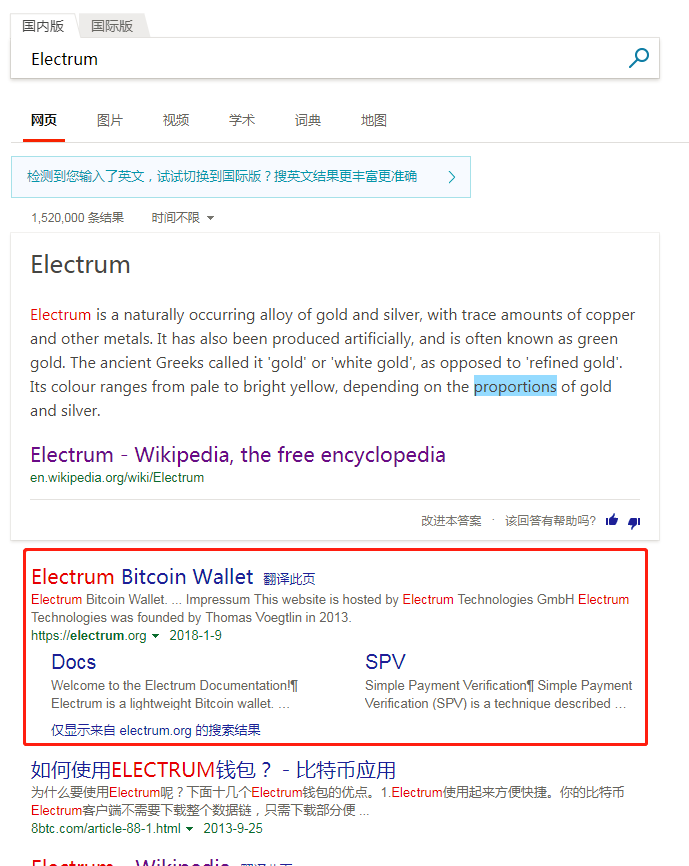
（在官网下载比特币钱包）
对于钱包程序来说，最重要信息的就是当前区块高度了，区块高度表示了当前你所在区块的序号，序号体现了你是否更新到了最新区块，而最新区块则决定了你能否查询到自己的交易。即规定了你所有交易账单的起始位置。
我们以Electrum钱包为例，点击圆圈中的控件，出现对话框，红框数字就代表了你本地钱包的块高。
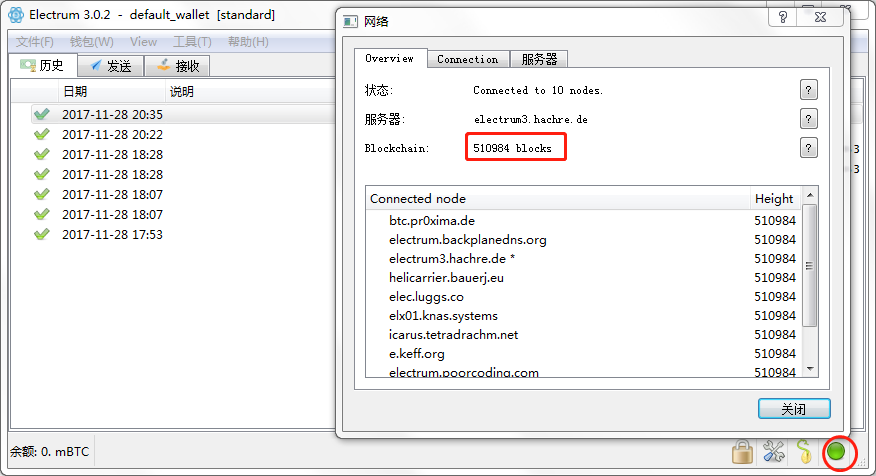 （比特币钱包块高）
由于Electrum的使用教程比较丰富，我们就不赘述了。
2.钱包文件与钱包账户
当你第一次安装好钱包以后，使用钱包的第一件事情就是创建账户（或者钱包文件）。
一般全节点钱包都支持多账户，尽管有些钱包有账户的概念，有些没有，在逻辑上也可以使用钱包文件替代账户这个概念。
例如Electrum轻钱包采用的是钱包文件，某些全节点钱包采用的是账户。咱们用某个币种的钱包为例子，点击创建账户以后，填好用户名密码，会得到如下信息：
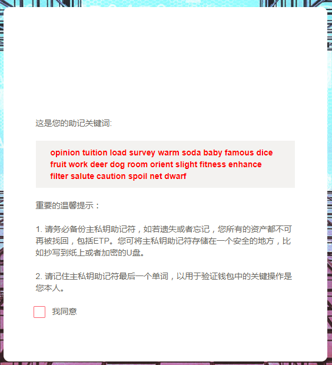 （某币种钱包助记词）
敲黑板划重点：红字部分又称助记词。这种助记词是为了主私钥服务的，主私钥其实是一串非常长的字母和数字组合，无论是人脑记或者笔记都是非常不容易识别的，容易弄错，助记词的有序组成与主私钥是一一对应的。
如果记录保存好了助记词（红字部分），即使钱包丢失或者被破坏也没有关系，用户可以在其他钱包中导入助记词，依然可以操作资产。
所以说在区块链的世界，主私钥和助记词是操作资产的唯一途径，如果丢失，那么资产就丢失，不存在忘记助记词还能找回资产这回事。
我们来看看比特币的助记词，我们点击左上角【文件】-【新建/恢复】，一直下一步直到出现12个单词（暂时不必理会每一步中的选项，不同选项代表不同格式的钱包文件），这12个单词也是助记词，只要保存好了助记词，你的比特币可以在任意（标准版）比特币钱包导入。
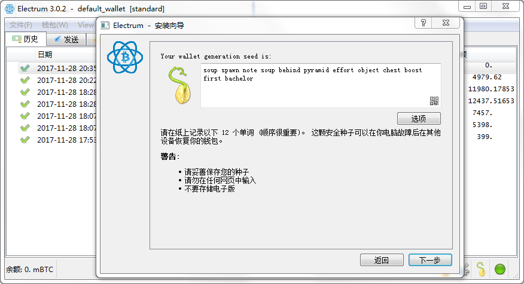 （比特币钱包助记词）
3.钱包地址
我们常听到别人说钱包地址，也就是对应到我们现在银卡的卡号。在币圈，地址其实也分很多种，我们今天只介绍最简单直观的——支付地址（Payment Address），也就是我们现在要说的钱包地址。现在咱们来看看自己的地址是什么。
在比特币中，地址是以1开头的一串字母和数字的组合，字母区分大小写。
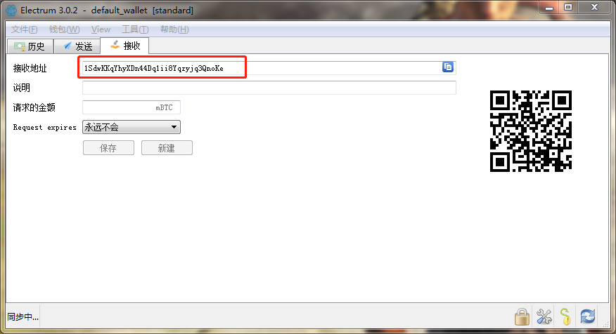
（比特币钱包地址）
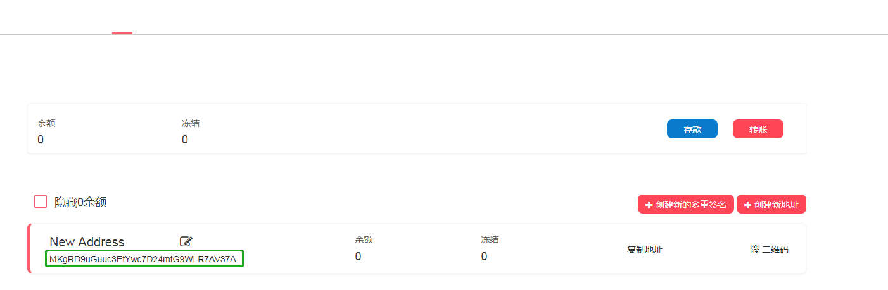
（某币种钱包地址）
4.获取代币
好了，现在我们已经有地址了，可是地址上没有代币，钱包就是一个摆设。现在我们想办法搞点代币过来。
我们先搞点代币进来，一般有两种方式，挖矿和上数字货币交易所购买。挖矿的技术门槛虽然不高，但是过程繁杂，手续繁琐，不推荐入门尝试。
好了，现在我们就只剩下购买这一条路了。
请注意！目前不存在人民币对数字货币的场内交易平台，所以想用人民币购买数字货币的各位只能选择场外交易，比较有名的平台有coincola.com，由于涉及投资，我们就不深入讲了。
你如果具有投资热情，可以继续挖掘“coinmarketcap”中绿框内的选项：
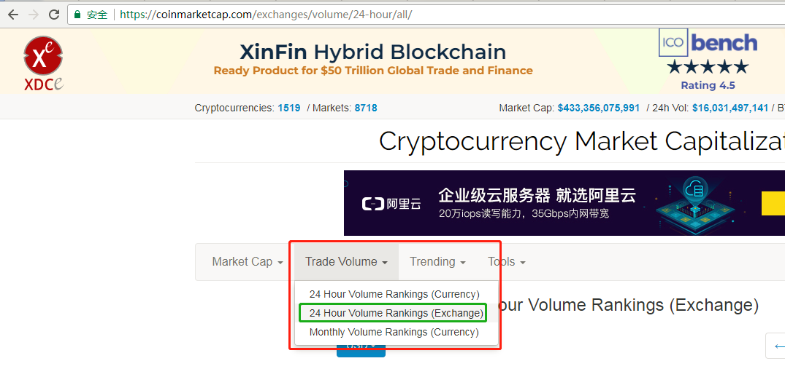
假设咱们已经拥有了比特币-BTC。
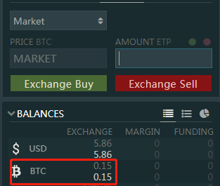
这是我刚刚在bitfinex上购买的0.15个比特币，其他交易平台原理大体相同，基本上比较大的交易平台都有交易手册，你可以自行翻看教程。
咱们接下来选择ETP/BTC 交易对，通过BTC购买一些ETP，然后找到提币，选择ETP提币。
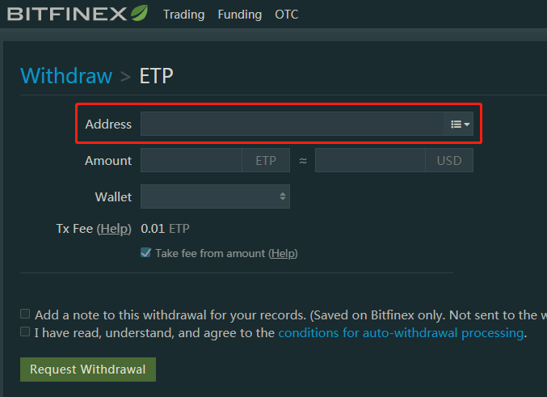 （提币地址）
这时候问题就来了，提币需要填写一个地址，这个地址就是咱们上文提到的钱包地址，你只需要把自己的钱包地址填入此处即可，填好其他项，发起提币请求即可。
5.区块链交易
接下来咱们只需要等待币到帐即可，到账的过程就是产生一笔区块链交易的过程，一般交易所都会提供TXID，就是交易哈希，供用户查询，TXID代表了这个区块链上某一个唯一的交易，也就是类似于咱们去银行转账后提供的流水单号。
我们可以根据TXID可以上区块浏览器（专门用于查询交易的工具链接）上查询该币交易，比如某一笔比特币交易：
https://blockchain.info/tx/6e64c2098b84b04a0d9f61a60d5bc8f5f80f37e19f3ad9c39bfe419db422b33c
网址 https://blockchain.info 后面这一长串就是TXID，下图是这一笔比特币交易的详细信息。
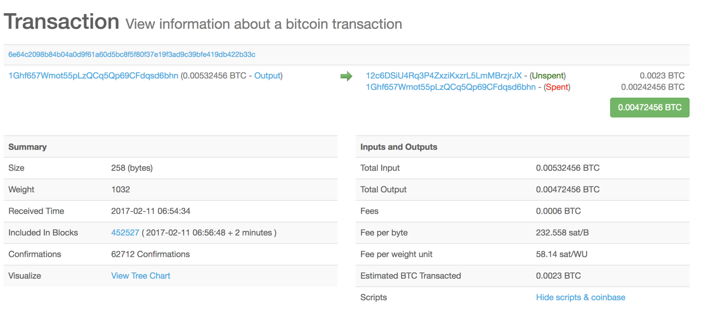 （比特币交易详细信息）
6.发送代币给别人
如果要把代币发送给别人，那么需要别人提供什么呢？对，就是钱包地址，这和银行转账需要别人提供银行卡号的道理一样。
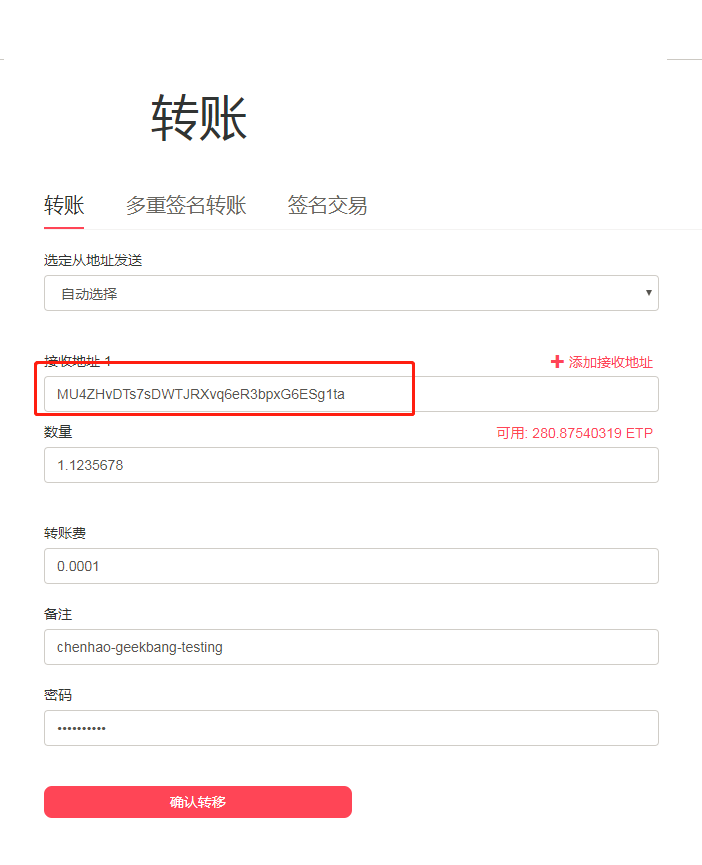 （某币种钱包转账） 如上图，咱们填写好表单以后，点击“确认转移”即可：钱包程序将为你生成一笔区块链交易并广播出去，大约等待1分钟就会被打包进区块，这个交易在任意的区块链浏览器上可以查询得到，咱们可以使用另外一个区块浏览器进行查询：
https://explorer.mvs.org/#!/tx/b3eb07276dbff703ecf9e4180a2bd8e58db346e55439ef831efcbbd958726a0c
这个区块链浏览器与上面一个区块浏览器不是同一个，但是都可以查询相同的交易，因为他们同属同一个主网（mainnet,相对应的是测试网testnet）。
各大交易所的充值功能，其实就是从自己的钱包转账到交易所的钱包地址，详细的充值和提币流程咱们会在后面的“弄懂数字货币交易平台”一文中详解。
总结
今天我带你过了一遍数字货币的参与过程，我们先介绍了钱包，接着介绍了钱包地址，以及尝试购买了一些代币，然后提币到个人钱包当中进行了测试。
为了确认交易是否达成，我们还介绍了区块浏览器，最后还教你如何将代币转移给其他人。这一篇文章虽然使用了特定的两个例子，但是在绝大多数数字货币钱包中，使用方式都是类似的。
最后，给你留下一道思考题，这一篇文章我们仅仅讨论了如何购买，那么数字货币挖矿的过程会是怎样的呢？你可以给我留言，感谢你的收听，我们下期再见。
附录：
OK国际站：【www.okex.com】- 火币网国际站：【www.huobi.pro】- 币安：【www.binance.com】- 中比特国际站：【www.zb.com】- 中比特海外版：【www.exx.com】- 比特儿海外版:【www.gate.io】- 比特时代海外版:【www.aex.com】- 元宝网海外版:【www.bcex.ca】- 聚币海外版:【www.coinegg.com】- 云币海外版:【www.big.one】- 币久网海外版:【www.cex.com】- 币赢网:【www.coinw.com】- kex:【www.kex.com】-
国外交易平台
Bitfinex:【www.bitfinex.com】- B网:【www.bittrex.com】- R网:【www.rightbtc.com】- P网:【www.poloniex.com】- L网:【liqui.io】- H网：【hashtoken.co】- CEO：【www.bite.ceo】- BTBT：【www.btbt.top】- HitBTC:【hitbtc.com】- bithumb:【www.bithumb.com】- coincheck:【coincheck.com/cn/】- bit-z:【www.bit-z.com】-
去中心化交易平台
以德：【etherdelta.com】- 比特股：【bitshares.org/wallet/#】-
场外交易平台
local：【localbitcoins.com/zh-cn】- 可盈可乐：【www.coincola.com/】- 比特币世界【www.bitcoinworld.com/】- 元宝场外交易【www.otc789.com/】-
电脑看行情网站
非小号：【www.feixiaohao.com】- 手机看行情软件：mytoken，aicoin-
比特币、区块链新闻网站
金色财经：【www.jinse.com】- 巴比特：【www.8btc.com】- bitcoin86：【www.bitcoin86.com】-
© 2019 - 2023 Liangliang Lee. Powered by gin and hexo-theme-book.